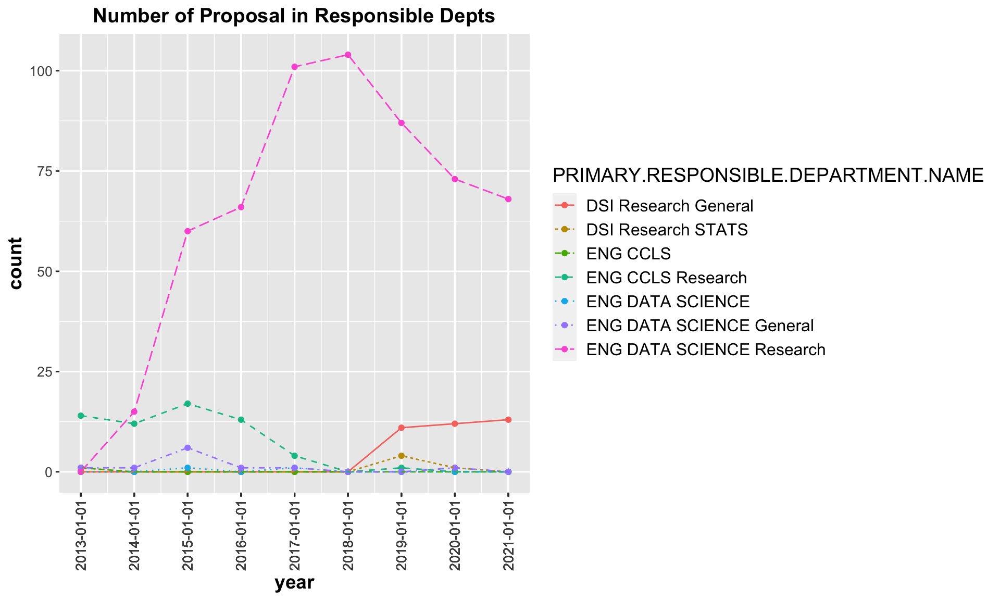

Chapter 5 Primary Responsible Departments
Another angle to analyze on these proposals is from the perspective of primary responsible departments.

I also use d3 to show the interactive bar chart.
From the above charts, the following trend shows up:
Proposal number of ENG DATA SCIENCE Research had a sudden increase in 2015 and continued increasing until 2019, after 2019, it dropped gradually;
After 2014, ENG DATA SCIENCE Research was responsible for far more proposals than other departments;
ENG CCLS Research once took in charge of many proposals, but after 2018, it almost doesn’t take charge of proposals;
Before 2018, DSI Research General didn’t take charge of proposals, while after 2018, it increased the number and maintained at that level. 2018 is also the time point when ENG DATA SCIENCE Research and ENG CCLS Research started to decrease.